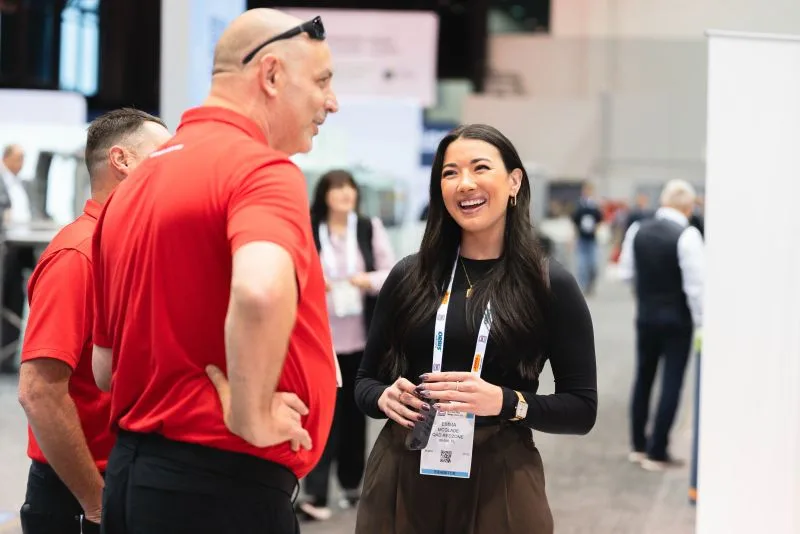
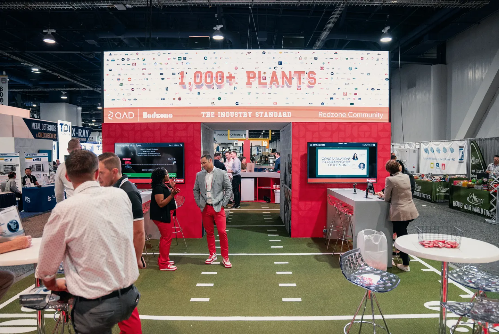
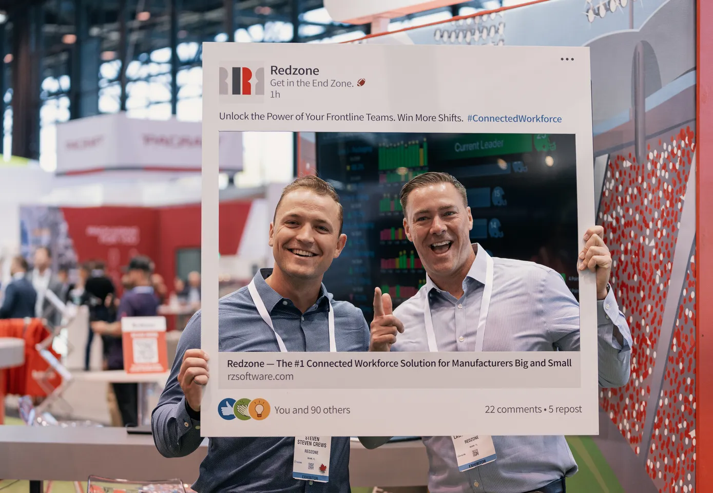
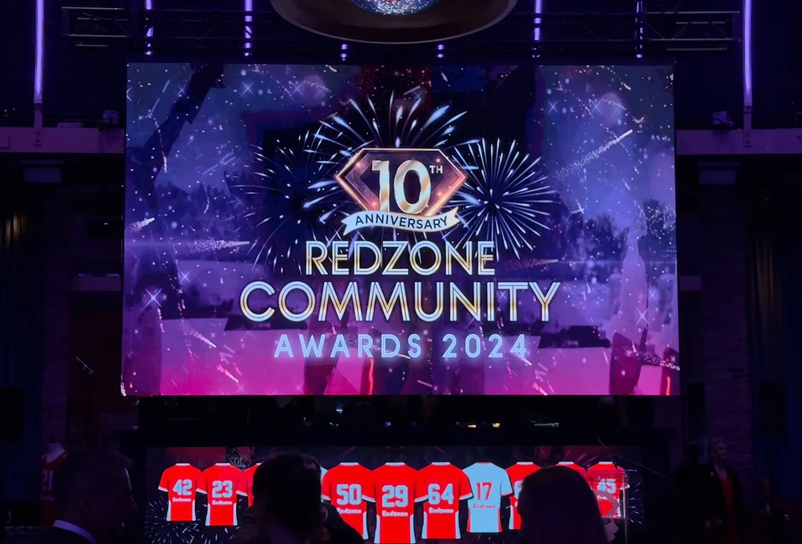

Three Years Building Redzone's Brand and the Process Behind It
Digital Marketing & Web Content Specialist | QAD Redzone
From June 2022 to August 2025 I was a Digital Marketing & Web Content Specialist at QAD Redzone, a connected workforce platform for plant floors. I joined as a new visual identity rolled out, working remotely on a marketing team of about three to five that grew to about fifteen. Over three years I built the intake process, 200+ SEO-optimized web and intranet pages, and the video, photography, and LinkedIn mix that put the people on the plant floor in front of the product, about half of it for customers and half for Redzone's own people.
- LinkedIn engagement, 2% to 14%
- 7x
- In LinkedIn engagement among competitors, up from fifth
- 1st
- SEO-optimized web and intranet pages, traffic up 33% year over year
- 200+
- Team Collaborator Award, voted by my colleagues
- 2024
A New Identity, a Small Team, No Intake Process
There was no intake process when I arrived. Requests came in with whatever the stakeholder had to hand, and the brand had a new identity to grow into.
Manufacturing software tends to look as cold as the factory floor it serves. Every competitor was very data heavy, with the person in the background. The product was wonderful, but the people running it on the floor were the story.
I owned the work end to end, from the first brainstorm to live: web content, organic social, paid media, video, and photography, with the landing pages behind them and the event leads tracked in Marketo, Salesforce, and 6sense.
From the Event Link to the Expo Floor
I owned creative and web requests from the first conversation to live. Review went back to the stakeholder (and on co-branded pages to the customer's team), and the work went out under my name.
Here are the five steps and which of them were mine.
My Part
Lead the First Conversation
Requests started with me in the room. I led the early brainstorms with stakeholders about what an event or campaign needed and what we had to work with. Even so, some arrived as literally the event link three weeks out, with nothing yet to catch what was missing.
My Part
Build the Intake, Then Use It
I built the intake form, the ticket, and the checklist in monday.com where none existed. After one launch package came in with too little time to do it well, the post-event surveys showed the real lead time was about two weeks, and that went into the form too.
- Logo as an SVG
- Banner size
- Event details
- About two weeks of lead time
My Part
Build It
The landing page from scratch, the graphics, the video, or all three, and for the booth the jumbotron loop, built with the events team from campaign footage and animated UI. Stakeholders did not have to wait for creative; a request could come back in less than two hours.
Stakeholders
Stakeholders Review
Internal stakeholders, and on co-branded pages the customer's team, reviewed over Slack and monday.com before anything went live.
My Part
Live, and On to the Next One
Live on the website, the intranet, the feed, or the booth. With intake catching what was missing, I could put out a fire instead of everything being a fire.




200+ SEO-Optimized Pages and 33% More Traffic
Over three years I wrote and built 200+ SEO-optimized web and intranet pages, in the website's global CMS and in SharePoint on the intranet, from event landing pages made from scratch on short notice to co-branded industry pages with customer brands. By my own estimate a quarter of the website was written by me. I also built the launch package for the public 2023 Productivity Benchmark Report (landing page, gated download, social series, one-pager) and launched Redzone University in October 2023 (copy, graphics, brochures), tracking enrollment and reporting it up every month.
Traffic rose 33% year over year (56K to 75K sessions), target terms moved from page two into the top 3 results in 6 to 9 months, and lead generation rose 105% year over year. The paid campaigns I ran turned six-figure budgets into 1M+ ad interactions at twice the industry-average CTR. In 2024 my roughly fifteen colleagues voted me the Team Collaborator Award for that year's work, from the Learning campaign and the website to everything in between.
Beyond the pages, nurture and onboarding email lifted demo requests 10%, and a leave-a-review nurture campaign I ran fed Redzone's 2023 Top 100 listing on G2, where it reached #83 of 130,000 SaaS products with a 4.9 rating. The rest of the stack: WordPress, Adobe Experience Manager, monday.com, Marketo, HubSpot, Salesforce, 6sense, GA4, Google Tag Manager, Hotjar, Screaming Frog, and Figma.
From Fifth, to Fourth, to First Place in LinkedIn Engagement
When I joined, Redzone ranked fifth among its competitors on LinkedIn engagement. I tracked each post type every month and shifted the mix toward customer stories, humor, and short video, and the ranking moved to fourth, then to first.
LinkedIn engagement grew 7x (2% to 14%), and Reels and YouTube reach grew 3x (20K to 60K). Redzone was first among those competitors on LinkedIn engagement when I left in August 2025.
People on Camera
I concepted, scripted, directed, and edited video for Redzone, with team members walking through the platform on camera. The ones I'm proudest of are the Module overviews, filmed on the busy show floor at PACK EXPO.
The Brand in Person: Trade Shows, Mailers, and Swag
Events were where the brand had to work in a room. A LinkedIn-post cutout gave attendees something to pose with and a tag to win an iPad, a shirt put an original character on people's backs, and for prospects a dimensional mailer built to look like an iPad box went out by their stage in the sales funnel.
Original Photography: People, Process, and Production
When the moment called for it, I shot the photography myself, for social and web, focused on people, process, and production.
Half the Work Faced the Company's Own People
About half of what I made was for Redzone's own people. I built and maintained my sections of the SharePoint intranet: the onboarding, training, and policy material I produced. I helped shape the promotion plan for WISE, Women Inspiring Success and Empowerment, the employee resource group for women and allies, filmed its promo video, and edited the International Women's Day 2024 and Women's History Month 2025 pieces. The monthly work-anniversary posts ran from May 2024 to July 2025, the volunteer days and GivingTuesday drives got their promotion from the same desk, and I taught recurring internal sessions on social and personal branding.
Hiring for a content, web, or marketing operations role? I would like to talk.
csworkportfolio@gmail.comLinkedIn